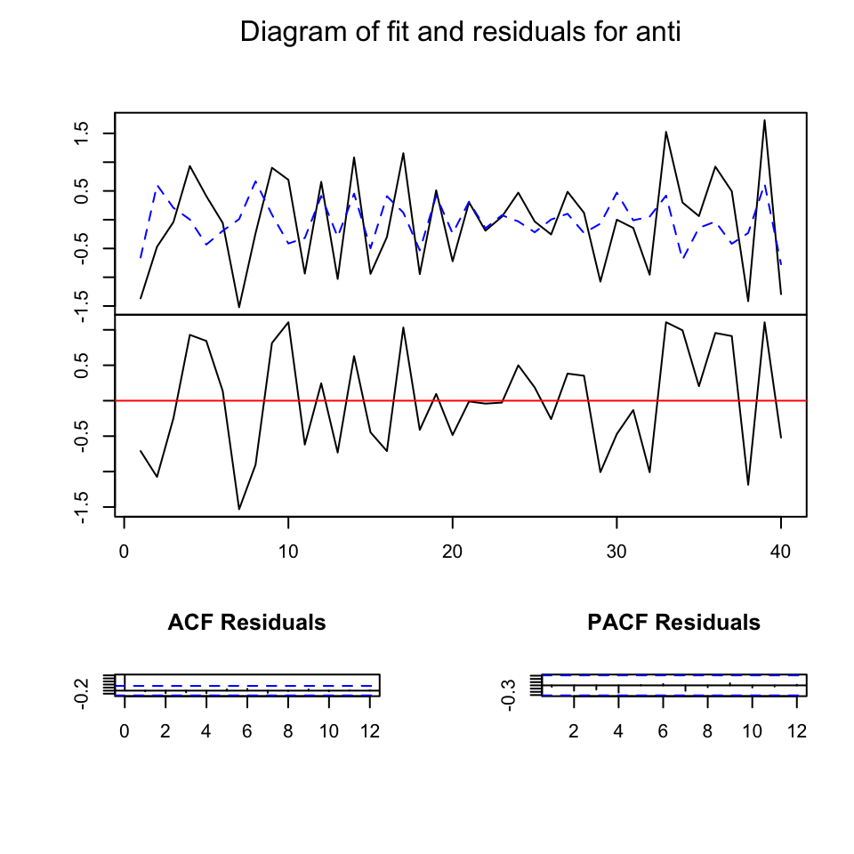
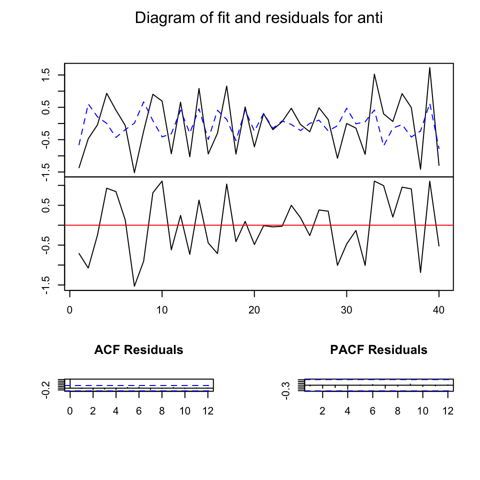

13 VAR
VAR is an acronym that stands for Vector Autoregressive Model. It is a common method for the analysis of multivariate time series.
It can be conceived as a way to model a system of time series. In a VAR model, there is no rigid distinction between independent and dependent variables, but each variable is both dependent and independent. Besides these endogenous variables that dynamically interact, a VAR model can include exogenous variables. Exogenous variables can have an impact on the endogenous variables, while the opposite is not true. To make a simple example, the time series of fans sold by month may be influenced by the quantity of fans produced and distributed by the industry, and by the monthly temperature. While the purchase and production of fans can interact (endogenous variables), the weather is not impacted by these processes, but just impact them as an external force (exogenous variable).
To make another example (from the paper The Impact of the Politicization of Health on Online Misinformation and Quality Information on Vaccines), the political debate on a certain topic - for instance the political debate that led to the promulgation of the law on mandatory vaccinations in Italy - could be considered an exogenous variable that impacts both the news coverage of the topic and the spread of problematic information on Twitter. While news media coverage and Twitter discussions can be considered part of the same communication system and dependent on each other (news media could set the discussion agenda on Twitter, but also social media can stimulate news media coverage) it could be assumed that the political debate that led to the promulgation of the law on mandatory vaccinations was independent from the Twitter discussions on the topic.
Stationary tests are usually applied to ascertain that variables are not integrated (the “I” in the ARIMA model). If this is the case, variables are differenced before starting the VAR analysis. Other preliminary analysis (for instance testing for cointegration) and pre-processing can be performed before the analysis. Next, the number of lags to be used has to be selected. This number can be automatically identify through automated methods (lag-length selection criteria methods). The model is then evaluated. Results from a VAR model are usually complicated, and the researchers relies on statistical methods such as Granger causality test. Granger causality test, a test developed by the nobel prize winner Clive Granger, has been applied to study agenda setting processes. A variable \(X\) is said to “Granger cause” another variable \(Y\) if \(Y\) can be better predicted from the past values of \(X\) and \(Y\) together than from the past of \(Y\) alone.
The Granger causality test is a statistical hypothesis test for determining whether one time series is useful in forecasting another, first proposed in 1969. Ordinarily, regressions reflect “mere” correlations, but Clive Granger argued that causality (…) could be tested for by measuring the ability to predict the future values of a time series using prior values of another time series. Since the question of “true causality” is deeply philosophical, and because of the post hoc ergo propter hoc fallacy of assuming that one thing preceding another can be used as a proof of causation, (…) the Granger test finds only “predictive causality”.
An R package to perform VAR modeling is vars.
Practical applications of VAR modeling, including Granger causality, can be found, for instance, in the paper Assembling the Networks and Audiences of Disinformation: How Successful Russian IRA Twitter Accounts Built Their Followings,2015–2017 or Coordinating a Multi-Platform Disinformation Campaign: Internet Research Agency Activity on Three U.S. Social Media Platforms, 2015 to 2017 at this link.
13.1 VAR modeling hands-on tutorial
13.1.1 Assumption of stationarity
Like most time series techniques, VAR assumes the series to be stationary. To recap:
A stationary time series is one whose properties do not depend on the time at which the series is observed. Thus, time series with trends, or with seasonality, are not stationary — the trend and seasonality will affect the value of the time series at different times. On the other hand, a white noise series is stationary — it does not matter when you observe it, it should look much the same at any point in time. […] In general, a stationary time series will have no predictable patterns in the long-term. Time plots will show the series to be roughly horizontal (although some cyclic behaviour is possible), with constant variance. Rob J. Hyndman and George Athanasopoulos, “Forecasting: Principles and Practice”.
Below are some examples of stationary and non-stationary series.
par(mar=c(0,0,1,0))
layout(matrix(c(1,1,2,3,4,5), ncol = 2, nrow = 3, byrow = T))
wn <- rnorm(n=1000)
plot(ts(wn), main = "Stationary Time Series (White Noise)")
abline(h = 0, col = "red", lwd = 2)
nonvariance_stat <- rnorm(n=1000) * 1:1000
plot(ts(nonvariance_stat),
main = "Non stationary in variance")
linear_trend <- rnorm(n=1000) + 0.05*1:1000
plot(ts(linear_trend),
main = "Non stationary in mean (Linear Trend)")
seasonality <- rnorm(n=24*30) + 0.2*rep(1:24, 30)
plot(ts(seasonality),
main = "Non stationary in mean (Seasonality)")
random_walk <- cumsum(sample(c(-100, 100), 1000, TRUE)) + rnorm(1000, sd = 44)
plot(ts(random_walk),
main = "Non stationary in mean (Random Walk)")
As we already learnt, some pre-processing steps are usually carried out to make it stationary when the series is not stationary. For instance, a series with a linear trend can be made stationary by removing the trend. A seasonal series can be seasonally adjusted. A random-walk-like series can be adjusted using differencing. Visual inspection and statistical tests can be performed to support findings on the characteristics of a time series.
Some of these pre-processing steps may be unnecessary when using the vars library, because its function VAR (which is used to fit VAR models) allows you to include trend and seasonality components.
par(mar=c(0,0,1,0))
layout(matrix(c(1,1,2,3,4,5,6,7), ncol = 2, nrow = 4, byrow = T))
plot(ts(wn), main = "Stationary Time Series (White Noise)")
abline(h = 0, col = "red", lwd = 2)
plot(ts(random_walk),
main = "Non stationary in mean (Random Walk)")
plot(diff(ts(random_walk)),
main = "Differenced")
plot(ts(linear_trend),
main = "Non stationary in mean (Linear Trend)")
plot(ts(residuals(lm(linear_trend ~ seq(1, length(linear_trend), 1)))),
main = "Detrended")
plot(ts(seasonality),
main = "Non stationary in mean (Seasonality)")
decomposed <- decompose(ts(seasonality, frequency = 24))
deseasonalized <- seasonality - decomposed$seasonal
plot(ts(deseasonalized),
main = "Deseasonalized")13.1.2 Other assumptions of VAR models: distribution of residuals
Besides stationarity and linearity between variables and their lagged values, VAR cannot be performed in the presence of structural breaks. Structural breaks are abrupt changes in the series’ mean or overall process. You can deal with structural breaks in different ways. For example, you might want to split the series into different phases, using the structural breaks as breakpoints.
Other crucial assumptions of VAR are about residuals, which are required to be:
- Non serially correlated
- Normal distributed
- Homoskedastic
Statistical tests included in the vars package can be used to check these assumptions.
Another fundamental assumption of VAR models is the absence of cointegration between series. Two series may be cointegrated only when they are both integrated of the same order. Integrated series achieve stationarity after being differentiated. The number of differentiation needed to achieve stationarity is the order of integration (usually, it is one: I(1) is the notation).
Integrated series are non-stationary, but it can happen that there is a linear combination of integrated series that is stationary. In that case, they are said to be cointegrated. Although each series follows a seemingly random path, over time, they are characterized by an equilibrium, as if they were driven by a common underlying process. Cointegration has been explained with the help of the story of the drunk and his dog:
In fact, the drunk is not the only creature whose behavior follow a random walk. Puppies, too, wander aimlessly when unleashed. Each new scent that crosses the puppy’s nose dictates a direction for the pup’s next step. […] But what if the dog belongs to the drunk? The drunk sets out from the bar, about to wander aimlessly in random-walk fashion. But periodically she intones “Oliver, where are you?”, and Oliver interrupts his aimless wandering to bark. He hears her; she hears him. He thinks: “Oh I can’t let her get too far off; she’ll lock me out”. She thinks, “Oh, I can’t let him get too far off; he’ll wake me up in the middle of the night with his barking”. Each assessed how far away the other is and moves to partially close that gap. Now neither drunk nor dog follows a random walk; each has added what we formally call an error-correction-mechanism to her or his steps. […] The paths of the drunk and the dog are still non-stationary. Significantly, despite the nonstationarity of the paths, one might still say, “If you find her, the dog is unlikely to be very far away”. If this is right, then the distance between the two paths is stationary, and the walks of the woman and her dog are said to be cointegrated (…). […] Notice that cointegration is a probabilistic concept. The dog is not on a leash, which would enforce a fixed distance between the drunk and the dog. The distance between the drunk and the dog is instead a random variable. But a stationary one, despite the nonstationarity of the two paths. Murray, M. P. (1994). A drunk and her dog: an illustration of cointegration and error correction. The American Statistician, 48(1), 37-39.
Statistical tests are used to determine whether cointegration is present. They have to be performed only when the series are integrated and have the same order of integration (again, cointegration can only exists if at least two series are integrated of the same order). Then, cointegration tests are performed. In presence of cointegration, Vector Error Correction Models (VECM) are used instead of VAR. VECM is basically a VAR model with an “error correction term”. This topic is not (yet) covered in this tutorial.
13.2 VAR fitting
Let’s make a simple example. Upload some data:
## date_time anti pro
## 1 2021-03-12 23:59:00 37 14085
## 2 2021-03-13 23:59:00 157 5219
## 3 2021-03-14 23:59:00 40 5106
## 4 2021-03-15 23:59:00 25 6898
## 5 2021-03-16 23:59:00 24 2974
## 6 2021-03-17 23:59:00 61 3230Let’s visually inspect the series:
As the variance does not look constant, so we can tentatively log-transform the series and work with log-transformed data.
ts_tweets$pro <- log(ts_tweets$pro)
ts_tweets$anti <- log(ts_tweets$anti)
plot.ts(ts_tweets[, c("pro", "anti")],
plot.type = "multiple",
main = "tweets")To check for stationarity, we can perform a test such as the Augmented Dickey-Fuller Test. Integration is suggested only for the “anti” series.
tseries::adf.test(ts_tweets$pro)##
## Augmented Dickey-Fuller Test
##
## data: ts_tweets$pro
## Dickey-Fuller = -3.9314, Lag order = 3, p-value = 0.02193
## alternative hypothesis: stationary
tseries::adf.test(ts_tweets$anti)##
## Augmented Dickey-Fuller Test
##
## data: ts_tweets$anti
## Dickey-Fuller = -2.101, Lag order = 3, p-value = 0.5338
## alternative hypothesis: stationaryThe series becomes stationary after differencing.
## Warning in tseries::adf.test(anti): p-value smaller than printed p-value##
## Augmented Dickey-Fuller Test
##
## data: anti
## Dickey-Fuller = -4.7232, Lag order = 3, p-value = 0.01
## alternative hypothesis: stationaryWe can recreate the dataset including the differentiated series. Using a first difference transformation, we lose the first data point.
length(anti)## [1] 41
length(ts_tweets$pro)## [1] 42Indeed, the first point in the differentiated series is obtained by subtracting the first point from the second one. The second point in the differentiated series is obtained by subtracting the second point from the third one, and so on. Hence, the differentiated dataset will start from the second point in time, not the first one as in the original series. Therefore, we need to drop the first data point from the dataset.
# drop the first data point
ts_tweets <- ts_tweets[-1,]
# replance the anti series with the differentiated anti series
ts_tweets$anti <- antiTo fit the VAR model we use the library vars.
## Loading required package: MASS##
## Attaching package: 'MASS'## The following object is masked from 'package:dplyr':
##
## select## Loading required package: strucchange## Loading required package: sandwich##
## Attaching package: 'strucchange'## The following object is masked from 'package:stringr':
##
## boundary## Loading required package: urcaVAR models require the researcher to specify the number of lags to include in the model. Roughly speaking, lags are auto-regressive predictors. For example, considering a VAR model with two variables \(X\) and \(Y\), using 1 lag means that we use the value \(X_{t-1}\) and \(Y_{t-1}\) to predict \(X_t\) and \(Y_t\), and 2 lags that we use \(X_{t-1}\), \(X_{t-2}\), \(Y_{t-1}\), and \(Y_{t-2}\). The choice of lags is important. The function VARselect implements four different statistical tests to find the “best” number of lags.
In this case, all the criteria agree on one lag.
## $selection
## AIC(n) HQ(n) SC(n) FPE(n)
## 1 1 1 1
##
## $criteria
## 1 2 3 4 5 6 7
## AIC(n) -2.92630038 -2.81403228 -2.64199556 -2.42923055 -2.5769659 -2.77801920 -2.68597480
## HQ(n) -2.83582733 -2.66324387 -2.43089178 -2.15781141 -2.2452314 -2.38596933 -2.23360957
## SC(n) -2.64875447 -2.35145577 -1.99438843 -1.59659281 -1.5592975 -1.57532025 -1.29824525
## FPE(n) 0.05366012 0.06030449 0.07235601 0.09118664 0.0810697 0.06940455 0.08132081
## 8 9 10
## AIC(n) -2.68018280 -2.5499629 -2.4424493
## HQ(n) -2.16750221 -1.9769669 -1.8091380
## SC(n) -1.10742264 -0.7921721 -0.4996280
## FPE(n) 0.08986526 0.1167941 0.1564827The function to fit the model is VAR, and the number of lags is specified using the p parameter.
You can also include trend and/or seasonality, but in this case it doesn’t seem useful. It is also possible to include exogenous variables. Exogenous variables are usually defined as variables external to the system: they may affect the system, but are not affected by the system.
As in the VARselect function, we only use the columns containing the data (the first column in the dataset contains dates).
The model looks like this. As you can see, it is a system of linear regression models that includes lagged predictors. Before analyzing the results we need to confirm that the assumptions of the models are met.
summary(var_fit)##
## VAR Estimation Results:
## =========================
## Endogenous variables: pro, anti
## Deterministic variables: const
## Sample size: 40
## Log Likelihood: -53.79
## Roots of the characteristic polynomial:
## 0.4477 0.2503
## Call:
## vars::VAR(y = ts_tweets[, c("pro", "anti")], p = 1)
##
##
## Estimation results for equation pro:
## ====================================
## pro = pro.l1 + anti.l1 + const
##
## Estimate Std. Error t value Pr(>|t|)
## pro.l1 0.25131 0.16894 1.488 0.145
## anti.l1 -0.05992 0.06722 -0.891 0.379
## const 6.27985 1.41950 4.424 8.22e-05 ***
## ---
## Signif. codes: 0 '***' 0.001 '**' 0.01 '*' 0.05 '.' 0.1 ' ' 1
##
##
## Residual standard error: 0.3364 on 37 degrees of freedom
## Multiple R-Squared: 0.06146, Adjusted R-squared: 0.01073
## F-statistic: 1.212 on 2 and 37 DF, p-value: 0.3093
##
##
## Estimation results for equation anti:
## =====================================
## anti = pro.l1 + anti.l1 + const
##
## Estimate Std. Error t value Pr(>|t|)
## pro.l1 0.01161 0.38475 0.030 0.97610
## anti.l1 -0.44871 0.15309 -2.931 0.00576 **
## const -0.10750 3.23284 -0.033 0.97365
## ---
## Signif. codes: 0 '***' 0.001 '**' 0.01 '*' 0.05 '.' 0.1 ' ' 1
##
##
## Residual standard error: 0.7661 on 37 degrees of freedom
## Multiple R-Squared: 0.2029, Adjusted R-squared: 0.1598
## F-statistic: 4.709 on 2 and 37 DF, p-value: 0.01507
##
##
##
## Covariance matrix of residuals:
## pro anti
## pro 0.1132 0.0862
## anti 0.0862 0.5870
##
## Correlation matrix of residuals:
## pro anti
## pro 1.0000 0.3345
## anti 0.3345 1.0000serial.test is a test for serially correlated errors. The test is okay when not significant. The test is not significant.
vars::serial.test(var_fit)##
## Portmanteau Test (asymptotic)
##
## data: Residuals of VAR object var_fit
## Chi-squared = 33.632, df = 60, p-value = 0.9977normality.test performs tests for the normality of residuals. The tests are okay when not significant, like in this case.
vars::normality.test(var_fit)## $JB
##
## JB-Test (multivariate)
##
## data: Residuals of VAR object var_fit
## Chi-squared = 3.9951, df = 4, p-value = 0.4067
##
##
## $Skewness
##
## Skewness only (multivariate)
##
## data: Residuals of VAR object var_fit
## Chi-squared = 1.8704, df = 2, p-value = 0.3925
##
##
## $Kurtosis
##
## Kurtosis only (multivariate)
##
## data: Residuals of VAR object var_fit
## Chi-squared = 2.1247, df = 2, p-value = 0.3456Another fundamental test is performed by the function stability. The test is okay if the series stay within the red bars. It is okay.
arch.test assesses the null hypothesis that a series of residuals exhibits no heteroscedasticity. Also this test is not significant, which is good.
vars::arch.test(var_fit)##
## ARCH (multivariate)
##
## data: Residuals of VAR object var_fit
## Chi-squared = 44.188, df = 45, p-value = 0.5062As all the assumptions are met, we can take a look at the overall fit. It doesn’t look amazing, but the assumptions are met, so let’s assume it is good enough and let’s go ahead with the analysis.
 

The not-so-good fit is probably related to the fact that both variables in the VAR system are not highly correlated. Most coefficients are not statistically significant and the overall R-square is small.
Generally, the coefficient table is not interpreted. Instead, VAR models are interpreted using other tools, such as the Granger causality test.
summary(var_fit)##
## VAR Estimation Results:
## =========================
## Endogenous variables: pro, anti
## Deterministic variables: const
## Sample size: 40
## Log Likelihood: -53.79
## Roots of the characteristic polynomial:
## 0.4477 0.2503
## Call:
## vars::VAR(y = ts_tweets[, c("pro", "anti")], p = 1)
##
##
## Estimation results for equation pro:
## ====================================
## pro = pro.l1 + anti.l1 + const
##
## Estimate Std. Error t value Pr(>|t|)
## pro.l1 0.25131 0.16894 1.488 0.145
## anti.l1 -0.05992 0.06722 -0.891 0.379
## const 6.27985 1.41950 4.424 8.22e-05 ***
## ---
## Signif. codes: 0 '***' 0.001 '**' 0.01 '*' 0.05 '.' 0.1 ' ' 1
##
##
## Residual standard error: 0.3364 on 37 degrees of freedom
## Multiple R-Squared: 0.06146, Adjusted R-squared: 0.01073
## F-statistic: 1.212 on 2 and 37 DF, p-value: 0.3093
##
##
## Estimation results for equation anti:
## =====================================
## anti = pro.l1 + anti.l1 + const
##
## Estimate Std. Error t value Pr(>|t|)
## pro.l1 0.01161 0.38475 0.030 0.97610
## anti.l1 -0.44871 0.15309 -2.931 0.00576 **
## const -0.10750 3.23284 -0.033 0.97365
## ---
## Signif. codes: 0 '***' 0.001 '**' 0.01 '*' 0.05 '.' 0.1 ' ' 1
##
##
## Residual standard error: 0.7661 on 37 degrees of freedom
## Multiple R-Squared: 0.2029, Adjusted R-squared: 0.1598
## F-statistic: 4.709 on 2 and 37 DF, p-value: 0.01507
##
##
##
## Covariance matrix of residuals:
## pro anti
## pro 0.1132 0.0862
## anti 0.0862 0.5870
##
## Correlation matrix of residuals:
## pro anti
## pro 1.0000 0.3345
## anti 0.3345 1.000013.3 Granger causality test
We use the causality function to perform the Granger causality test. The Granger causality test is the most basic inferential tool available in VAR analysis. A time series X is considered a Granger cause of another time series Y if past values of X and Y predicts Y significantly better than past values of Y alone. This analysis is frequently performed in communication studies focused on agenda setting phenomena.
Let’s see if there’s Granger causality between our series. The researcher needs to specify the “cause” variable (sometimes, the researcher may have a hypothesis about that). In this case, we try both. There is no granger causality effect but some contemporaneous relationship (instant causation).
vars::causality(var_fit, cause = "pro")## $Granger
##
## Granger causality H0: pro do not Granger-cause anti
##
## data: VAR object var_fit
## F-Test = 0.00090982, df1 = 1, df2 = 74, p-value = 0.976
##
##
## $Instant
##
## H0: No instantaneous causality between: pro and anti
##
## data: VAR object var_fit
## Chi-squared = 4.0242, df = 1, p-value = 0.04485
vars::causality(var_fit, cause = "anti")## $Granger
##
## Granger causality H0: anti do not Granger-cause pro
##
## data: VAR object var_fit
## F-Test = 0.79448, df1 = 1, df2 = 74, p-value = 0.3756
##
##
## $Instant
##
## H0: No instantaneous causality between: anti and pro
##
## data: VAR object var_fit
## Chi-squared = 4.0242, df = 1, p-value = 0.04485